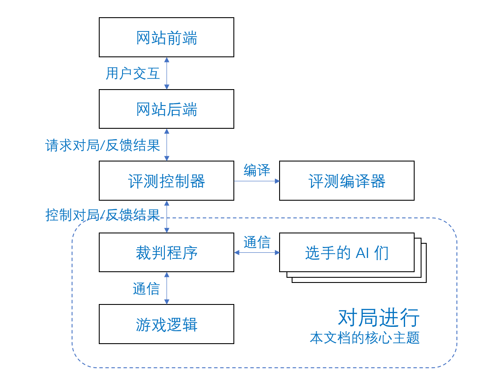

平台使用导引
本文档将详细说明ai如何与平台交互，并介绍AI的通常实现方式。
saiblo平台的交互逻辑
下图展示了saiblo平台的结构: 
{kind=link}
在对局过程中，平台向选手AI暴露的只有裁判程序的接口。 裁判程序在比赛进行过程中将通过标准IO接收选手发来的消息，并将其格式化转发给逻辑。 在逻辑进行比赛判定后，如果游戏逻辑希望向选手返回消息，则游戏逻辑将请求裁判程序转发该消息。 裁判程序会将游戏逻辑请求返回的消息格式化后通过标准IO发给选手AI。
在此同时，裁判程序将监控选手AI的运行状态，在选手AI运行状态发生改变或回合运行时间超过设定值时通知游戏逻辑，由游戏逻辑判定进行游戏状态改变或终止游戏。
- judger 在启动AI后，向游戏逻辑发送AI的初始化信息。如逻辑判定AI行为异常,将报告judger游戏结束。
- judger 和AI开始交互，交互类型分为以下几种：
- AI向 judger 发送各种消息，judger需要进行解析与处理；
- 游戏逻辑请求judger直接将消息转发给AI；
- judger 将 AI 发送的消息封装后转发给游戏逻辑；
- judger 将 AI 的异常情况报告给游戏逻辑。
- 如游戏结束，游戏逻辑向 judger 提供玩家得分，并报告游戏结束。
通信协议
由于平台没有限制选手AI与裁判程序的通信格式，通信协议会由游戏开发者规定。 选手需要阅读游戏文档中的通信协议规定，在实现的AI中将操作格式化为通信协议规定的格式。
通常，通信协议包含了AI向judger发送自身操作的格式，以及judger转发的游戏逻辑发送的对方操作、回合结束信息以及可能包含的局面更新信息。
典型样例：猜数字游戏
游戏逻辑随机选取一个0～999中的数。两名玩家交替公开猜测，游戏逻辑告知双方是否猜中，直到一方猜中该数字。猜中的玩家获胜。
典型通信过程
一个典型的一千以内猜数字游戏通信协议如下：
游戏逻辑：
在游戏开始时发送一个数字，该数字为0或1，如收到0代表玩家为先手，否则为后手；
之后每回合发送一行字符串，该行能被解析为一个整数:
如果该结果为自然数代表对方最近一次猜测的数字；
如果为-1代表我方猜中，游戏结束；
如果为-2代表对方猜中，游戏结束；
AI：
每回合发送一行字符串，该字符串应能被解析成一个自然数，代表该回合我方猜的数字。
在这个通信协议下，一个典型的通信过程如下：
初始化阶段：
游戏逻辑初始化完毕，生成的随机数为114；双方AI初始化完毕。
第1回合：
游戏逻辑请求裁判程序向AI0发送 "0\n" ，向AI1发送 "1\n"；
AI0收到裁判程序发送的消息，随后向裁判程序发送 "514\n"；
游戏逻辑收到AI0消息，随后请求裁判程序向AI1发送 "514\n"；
AI1收到裁判程序发送的消息，并向裁判程序发送 "250\n";
游戏逻辑收到AI1消息，随后通知裁判程序第一回合结束。
第2回合：
游戏逻辑请求裁判程序向AI0发送 "250\n";
AI0收到裁判程序发送的消息，并向裁判程序发送 "114\n"；
游戏逻辑收到AI0消息，判定游戏结束；
游戏逻辑请求裁判程序向AI0发送 "-1\n" ，向AI1发送 "-2\n"；
结束阶段：
游戏逻辑进行结束阶段清理，随后通知裁判程序游戏结束并告知游戏结果。
一个典型的异常通信过程如下：
初始化阶段：
游戏逻辑初始化完毕，生成的随机数为114；双方AI进行初始化，AI0异常退出。
结束阶段：
游戏逻辑请求裁判程序向AI1发送 "-1\n"；
游戏逻辑进行结束阶段清理，随后通知裁判程序游戏结束并告知游戏结果。
另一个典型的异常通信过程如下：
初始化阶段：
游戏逻辑初始化完毕，生成的随机数为114；双方AI初始化完毕。
第1回合：
游戏逻辑请求裁判程序向AI0发送 "0\n" ，向AI1发送 "1\n"；
AI0收到裁判程序发送的消息，随后向裁判程序发送 "514\n"；
游戏逻辑收到AI0消息，随后请求裁判程序向AI1发送 "514\n"；
AI1收到裁判程序的消息，但触发了神奇bug，调用了sleep(114514)；
裁判程序在规定时间内未收到AI1消息，通知游戏逻辑；
游戏逻辑请求裁判程序向AI0发送 "-1\n" ，向AI1发送 "-2\n"；
结束阶段：
游戏逻辑进行结束阶段清理，随后通知裁判程序游戏结束并告知游戏结果。
选手AI的实现
在猜数字游戏中，一个典型的AI实现如下：
#include<iostream>
using namespace std;
int main(){
int my_seat, opposite_guess = 0;
int my_guess = 0, impossible[1000];
cin >> my_seat;
while(1){ // 持续交互
if(!my_seat){ // 判断先后手
while(impossible[my_guess]) // 进行决策
++my_guess;
cout << my_guess << "\n"; // 向裁判程序发送决策
cin >> opposite_guess; // 等待对方操作
if(opposite_guess >= 0) // 更新局面
impossible[opposite_guess] = 1;
else
return;
}
else{
cin >> opposite_guess;
if(opposite_guess >= 0)
impossible[opposite_guess] = 1;
else
return;
while(impossible[my_guess])
++my_guess;
cout << my_guess << "\n";
}
}
}